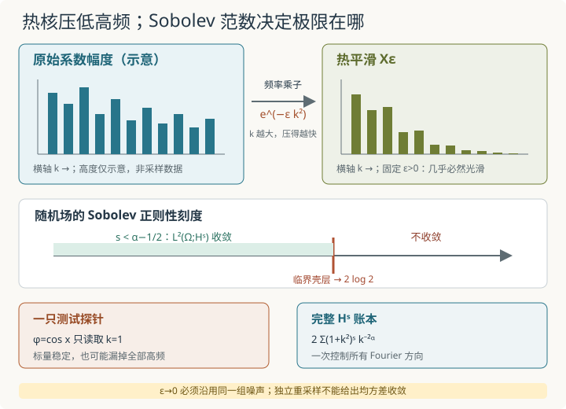

本页目录
基础衔接 18 · 热核正则化与随机分布：在哪个空间里真的收敛？
先修：分布与弱导数、Sobolev 空间、Wick 平方与截断极限。Wick 平方讲只让一个随机对象与常数测试函数配对；本讲把整个 Fourier 场放入 \(L^2(\Omega;H^s)\)，给出精确正则性阈值，再证明热核平滑在同一概率空间上回到原随机分布。
每个光滑测试函数都看见极限，为什么还要指定 Sobolev 空间？
1. 先把圆周、基和范数的归一化钉牢
把圆周写成 \(\mathbb T=[0,2\pi]\)，使用归一化测度
实三角基
在 \(L^2(\mathbb T,dx/(2\pi))\) 中正交归一。本讲去掉常数模；这让 \(\alpha=0\) 的例子成为均值为零的空间白噪声，不是包含独立零模的完整白噪声。
令 \(\xi_k^c,\xi_k^s\) 全部相互独立且服从 \(N(0,1)\)，固定 \(\alpha\ge0\)，定义
所有截断共用同一组随机系数。从 \(N\) 到 \(M\) 只打开新频率，不重新抽取旧频率。
若 \(f\) 的实 Fourier 坐标为 \(\widehat f_k^c,\widehat f_k^s\)，本讲采用
作为去零模部分的 Sobolev 范数。\(s<0\) 不是“负的范数”，而是高频受到较小权重的较粗空间；其完备化包含普通点值未必存在的分布。
2. 不只看一个配对：直接计算整个空间范数
正交性和 \(E[(\xi_k^c)^2]=E[(\xi_k^s)^2]=1\) 给出
前面的因子 2 来自每个正频率的余弦与正弦两份实坐标。若改用复指数基，必须同时处理正负频率与实值共轭约束；不能只换符号而保留错误计数。
对 \(M>N\)，同一耦合使前 \(N\) 个频率逐项消掉，因此
当 \(k\) 很大时，被加项与 \(2k^{2s-2\alpha}\) 同阶。\(p\) 级数判据于是给出
也就是精确阈值
在这个范围内，\((X_N)\) 是 \(L^2(\Omega;H^s)\) Cauchy 序列。因为 \(L^2(\Omega;H^s)\) 完备，存在同一概率空间上的 \(H^s\) 值随机变量 \(X\)，使
这句话同时指定了随机变量拓扑和空间拓扑，比“每个频率看起来稳定”强得多。
3. 临界值不能靠有限曲线蒙混
在临界值 \(s=\alpha-1/2\)，取倍增截断 \(M=2N\)：
单项可以写成
所以
序列在临界空间不是 Cauchy。若 \(s>\alpha-1/2\)，倍增壳层更不会趋零。图上某几个有限 \(N\) 的曲线变平，不能覆盖这个无限频率反例。
这里的二阶矩发散已经否定 \(L^2(\Omega;H^s)\) 收敛，但单凭“期望无穷”还不能断言每个样本的范数无穷。要得到几乎必然的临界失败，再设
\(Z_k\) 独立，\(E Z_k=2\)、\(\operatorname{Var}Z_k=4\)。因为 \(\sum_k4w_k^2<\infty\)，独立中心随机变量级数 \(\sum_k w_k(Z_k-2)\) 几乎必然收敛（可由其部分和是有界于 \(L^2\) 的鞅及鞅收敛定理得到）。而 \(\sum_k2w_k=\infty\)，故 \(\sum_k w_kZ_k=\infty\) 几乎必然。这才证明 \(X\) 几乎必然不属于临界空间；更高阶空间嵌入临界空间，因而也被排除。低于临界时范数平方期望有限，则范数几乎必然有限。
在收敛范围内还能给出可交卷的尾界。令
对 \(k\ge1\)，有 \((1+k^2)^s\le C_sk^{2s}\)，故
这是均方 \(H^s\) 误差界；开平方才是 \(L^2(\Omega;H^s)\) 范数界。
4. 一个测试函数的收敛，究竟少了什么？
对光滑测试函数 \(\varphi\)，记
其中配对使用 \(dx/(2\pi)\)。则
并且
光滑函数的 Fourier 系数比任意固定负幂衰减得更快，所以这份标量方差级数收敛。对每个固定 \(\varphi\)，配对因此在 \(L^2(\Omega)\) 中有极限。
但只检查一个 \(\varphi\) 完全可能漏掉高频。例如 \(\varphi(x)=\cos x\) 时，\(N\ge1\) 后
与所有 \(k\ge2\) 的坐标无关。这个标量从第一步就“完美收敛”，却无法判断整个场是否在 \(H^{-1/2}\)、\(L^2\) 或任何其他指定空间收敛。
要声称随机分布在某个拓扑中收敛，需要一组控制测试函数族或空间范数的一致估计，并处理随机律的紧性或强耦合。本模型用上一节的 \(L^2(\Omega;H^s)\) 尾和直接完成了这件事；单个配对只是必要的观察窗口，不是充分证书。
5. 为什么白噪声不是“每一点抽一个普通随机数”？
取 \(\alpha=0\)。对任意固定 \(x\)，截断场的点方差为
所以 \(X_N(x)\) 不会在 \(L^2(\Omega)\) 中收敛。事实上它服从 \(N(0,2N)\)，对每个有限 \(M\)，\(P(|X_N(x)|\le M)\to0\)，连有限随机点值的依概率极限也不存在。更本质地，上一节给出的极限只属于
而点值评价并不是这些负正则性空间上的连续泛函。白噪声的基本对象是 \(\varphi\mapsto\langle X,\varphi\rangle\)，不是一张由相互独立点值组成的普通函数表。
由于本讲去掉零模，\(\alpha=0\) 时对一般测试函数有
若把独立常数模补回，右边才变成完整的 \(\|\varphi\|_{L^2}^2\)。这个差别不影响高频正则性阈值，但影响协方差的精确公式。
6. 热核怎样平滑，又在哪个拓扑回去？
圆周 Laplacian 满足
因此对 \(\epsilon>0\)，定义
热核不是“把所有频率减去同一个常数”，而是给第 \(k\) 个频率乘 \(e^{-\epsilon k^2}\)。高频按 \(k^2\) 指数压低。对任意 \(r\in\mathbb R\)，
所以对每个固定 \(\epsilon>0\)，该级数在任意 Sobolev 阶数收敛。取可数个整数 \(r\) 并用圆周上的 Sobolev 嵌入，可得 \(X_\epsilon\) 几乎必然是 \(C^\infty\) 函数。
现在固定任意 \(s<\alpha-1/2\)，并让 \(X_\epsilon\) 与 \(X\) 使用同一组 \(\xi_k^c,\xi_k^s\)。则
对每个固定 \(k\)，括号随 \(\epsilon\downarrow0\) 趋于零；它又被 1 控制，而
在所选 \(s\) 下可求和。离散支配收敛定理于是给出
这里同时写清了概率拓扑、空间拓扑和耦合方式。若每个 \(\epsilon\) 都独立重采样一个 \(X_\epsilon'\)，则交叉项期望为零，反而有
不会趋零。两边的分布律仍可能收敛，不等于这组独立样本在均方意义靠近。

热核让每个固定 \(\epsilon>0\) 的场变光滑；让 \(\epsilon\downarrow0\) 时，只有先选定 \(s<\alpha-1/2\) 并沿用同一噪声，才能得到这里证明的强 \(L^2(\Omega;H^s)\) 极限。
7. 实验怎样读：频率滤波不是收敛证书
实验使用 \(\alpha\in[0,2]\)、\(s\in[-1.5,1]\)、截断 \(N\in\{8,16,32,64,128\}\) （截断滑块选择指数 \(n\)，即 \(N=2^n\)）与热时间 \(\epsilon\in[0.01,0.2]\)；建议默认 \(\alpha=0\)、\(s=-3/4\)、\(N=16\)、\(\epsilon=0.05\)。它画出原始与热过滤后的模态贡献，并报告部分和、倍增壳层和理论尾界。
按下面顺序操作：
- 默认输入满足 \(s<\alpha-1/2\)。核对 \(E\|X_{16}\|_{H^{-3/4}}^2\approx3.267141087\)，\(16<k\le32\) 的倍增壳层约为 \(0.282552038\)。
- 保持 \(\alpha=0,N=16\)，把 \(s\) 改成临界值 \(-1/2\)。倍增壳层约为 \(1.354173150\)；增大 \(N\) 时它趋近 \(2\log2\approx1.386294361\)，不会趋零。
- 回到 \(s=-3/4\)，减小 \(\epsilon\)。热滤波曲线逐步接近原谱，但越来越多高频重新出现；有限画布接近不等于已证明无穷级数收敛。
- 增大 \(\alpha\)。阈值 \(\alpha-1/2\) 向右移动，说明原场本身更平滑；这与固定 \(\epsilon>0\) 时热核带来的无限阶平滑是两件事。
默认收敛例有 \(p=3/2\)、\(C_s=1\)，所以上一节尾界给
这个界故意保守，但覆盖全部未显示频率。实验模态曲线和部分和只用于理解，阈值证明依赖完整级数与临界壳层。
无脚本后备：
| 参数 | \(E\lVert X_N\rVert_{H^s}^2\) | \(E\lVert X_{2N}-X_N\rVert_{H^s}^2\) | 判定 |
|---|---|---|---|
| \(\alpha=0,s=-3/4,N=16\) | \(3.267141087\) | \(0.282552038\) | 位于收敛区，尾界为 1 |
| \(\alpha=0,s=-1/2,N=16\) | 不作为证书 | \(1.354173150\) | 临界；壳层趋于 \(2\log2\) |
| 一般 \(s<\alpha-1/2\) | 有有限极限 | 趋向 0 | \(L^2(\Omega;H^s)\) Cauchy |
| 一般 \(s=\alpha-1/2\) | 发散 | 趋于 \(2\log2\) | 非 Cauchy |
8. 两道迁移题
题一。 取 \(\alpha=0\)。分别判断 \(X_N\) 在 \(H^{-3/4}\) 与 \(H^{-1/2}\) 中是否为 \(L^2(\Omega;H^s)\) Cauchy；对收敛情形给出平方尾误差界，对临界情形给出倍增反例。
查看答案：只差四分之一阶，结论完全不同
\(s=-3/4\) 时
所以序列收敛，且
\(s=-1/2\) 正好临界。此时
因此它不是 Cauchy。白噪声属于每个 \(H^{-1/2-\delta}\)（以这里的 \(L^2(\Omega;H^s)\) 意义），却不属于临界 \(H^{-1/2}\)。
题二。 有人只用 \(\varphi(x)=\cos x\) 测试，发现 \(\langle X_N,\varphi\rangle\) 从 \(N=1\) 起就不变，于是宣称 \(X_N\) 在 \(H^{-1/2}\) 收敛。指出错误，并给出能直接反驳的量。
查看答案：一只低频探针看不见高频壳层
由正交性，
对所有 \(N\ge1\) 都成立。这个测试只读取第一个余弦模，完全遗漏 \(k\ge2\)。
在 \(\alpha=0,s=-1/2\) 中，直接检查整个 Sobolev 壳层：
因此 \(H^{-1/2}\) Cauchy 性失败。一个连续线性泛函上的收敛不能推出 Hilbert 空间范数收敛；需要控制全部方向的总能量。
9. 这一步离奇异 SPDE 还有多远？
本讲构造了一个线性 Gaussian 随机分布，证明 Fourier 截断和热核正则化在指定负 Sobolev 空间中收敛。它已经比单一测试函数配对更强，却还没有定义 \(X^2\)、Wick 幂或任何非线性方程。
进入奇异 SPDE时，困难会从“场在哪个空间”升级为“粗糙对象能否相乘、近似反项是否一致、解映射是否连续”。热核能制造光滑近似，但“每个 \(\epsilon\) 都可计算”本身不保证非线性结果随 \(\epsilon\downarrow0\) 收敛，更不保证不同正则化方案给出同一物理参数。
速查与资料
两份实 Fourier 模态 → \(H^s\) 二阶矩级数 → 阈值 \(s<\alpha-1/2\) → 临界壳层 \(2\log2\) → 热乘子 \(e^{-\epsilon k^2}\) → 同噪声下的支配收敛。回到Wick 平方时，应明确那里只证明了一个二次场的常数配对极限；本讲证明的是线性场自身在完整 Sobolev 范数中的极限。
Gaussian 随机变量、Hilbert 空间随机级数与正则化背景见 Hairer 的 Advanced Stochastic Analysis；热半群、空间白噪声与分布值 SPDE 的系统入口见作者讲义 An Introduction to Stochastic PDEs；圆周 Fourier 与 Sobolev 归一化可对照 Hairer 与 Kurniawan 的 Stochastic PDEs with multiscale structure。本讲阈值、临界壳层和尾界均由正文级数独立推出。资料核查：2026-09-08。